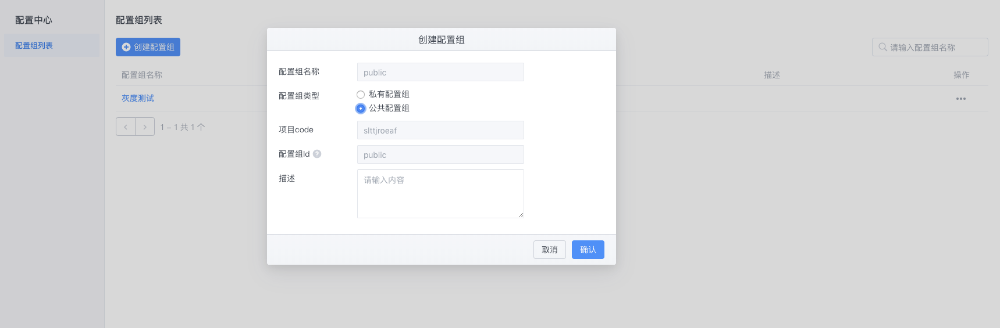
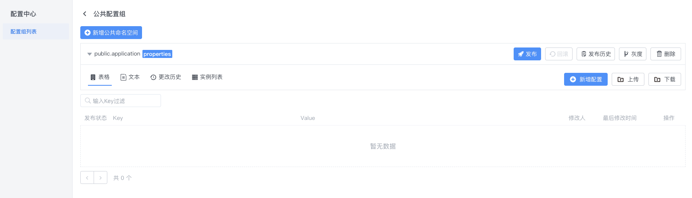

配置中心公共配置接入文档
一.配置中心使用
1.1 创建公共配置
在不存在公共配置组的情况下，点击创建配置组会有公共配置组的选项。

点击确认之后就会创建出如下配置组。每个环境只会存在唯一一个公共配置组。
1.2 创建公共配置空间
创建一个公共配置组之后会有一个默认的名为{env_code}.application的公共命名空间。

可以通过新增公共命名空间添加命名空间，并且名称都会有{env_code}.前缀。
图中例子的环境code为 public
二.客户端使用
2.1 通过注释的方法使用公共配置
其他接入步骤不变,只需修改@EnableApolloConfig里面的参数
@SpringBootApplication
@EnableApolloConfig({"public.application","application"})
public class ApolloDemo3Application {
public static void main(String[] args) {
SpringApplication.run(ApolloDemo3Application.class, args);
}
}
@EnableApolloConfig({"public.application","application"}) : 其中public.application为公共的命名空间，application为appId下的私有命名空间。 注: 放在前面的配置优先级比后面高。